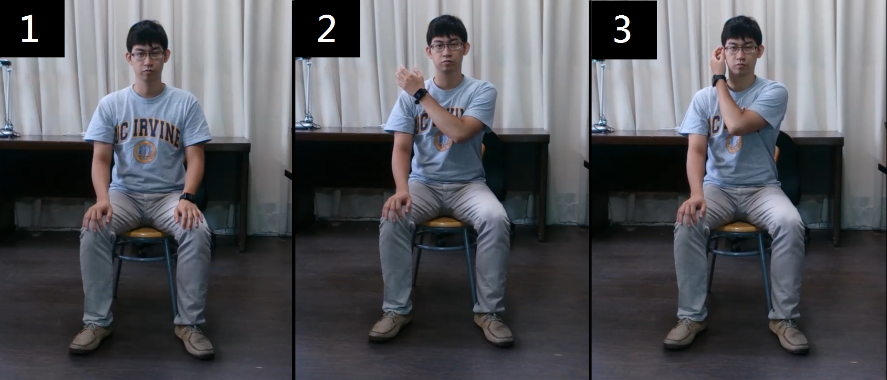

MedicalSuite
開始
教學
記錄
電子書
中風因子
本日復健動作列表
自主復健
請選擇動作次數
動作
未選擇
上舉
下放
摸耳朵
踢腿
挺腹
側抬腿
重力球
側上斜舉
次數
未選擇
5
10
15
20
25
30
35
40
45
50
角度
未選擇
90°
120°
180°
左右手
未選擇
右手
左手
位置
未選擇
肩膀
耳朵
影片示範
圖片示範
握法
示範
上舉示範影片
下放示範影片
耳朵示範影片
上舉錯誤示範影片
下放錯誤示範影片
摸耳朵錯誤示範影片
踢腿示範影片
挺腹示範影片
側抬腿示範影片
踢腿錯誤示範影片
側抬腿錯誤示範影片

請選擇您的性別 :
男性
女性
點
我
返
回
完成
2014 / 07/07 (Sat)
動作
上舉
次數
角度
位置
恭喜你!完成了，今日的練習
顯示加速度
返回首頁
中風因子檢測量表
Age(年紀)：
54-56
57-59
60-62
63-65
66-68
69-71
72-74
75-77
78-80
80-83
84-86
SBP(收縮壓)：
95-104
105-114
115-124
125-134
135-144
145-154
155-164
165-174
175-184
185-194
195-204
Hyp Rx(服降血壓藥之後的收縮壓)【無服藥則選：無服藥】：
無服藥
95-104
105-114
115-124
125-134
135-144
145-154
155-164
165-174
175-184
185-194
195-204
Diabetes(糖尿病史):
無
有
Cigs(抽菸習慣)：
無
有
CVD(心肌梗塞、心絞痛、冠狀動脈血液灌流不足、間歇性跛行、充血性心衰竭)：
無
有
AF(心房顫震病史)：
無
有
LVH(心電圖證實左心室肥大)：
無
有